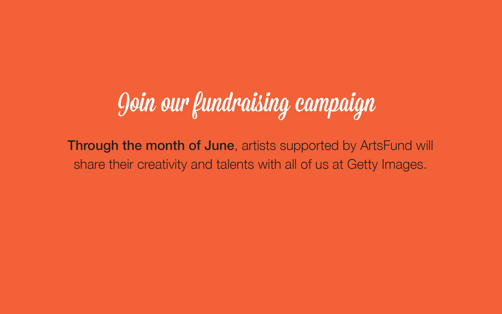
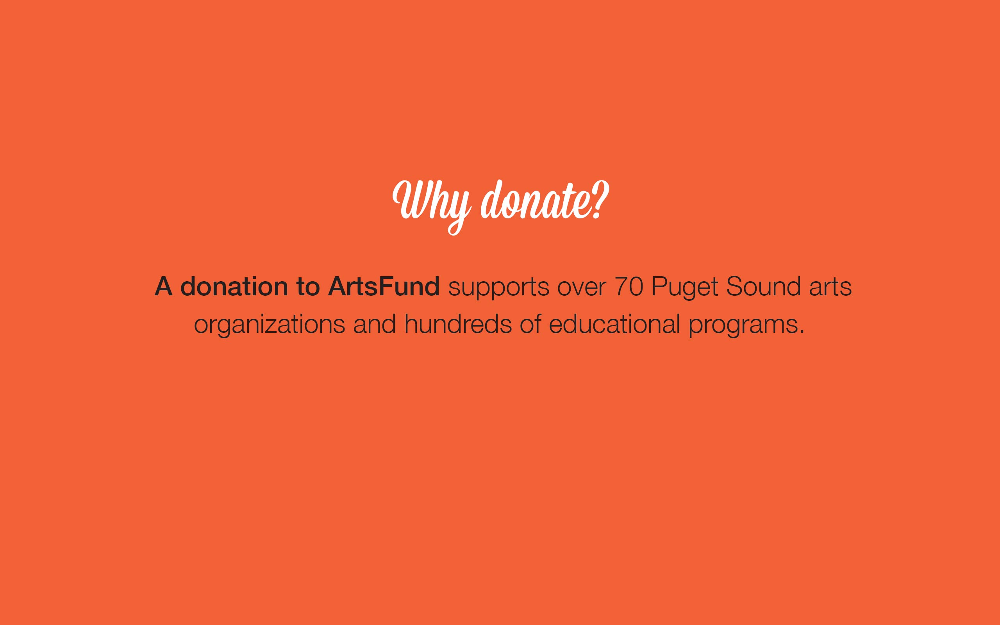
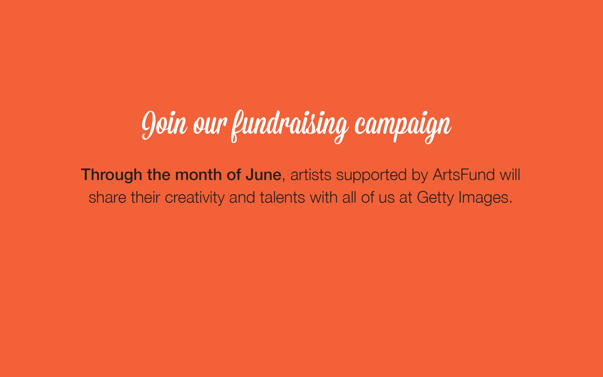
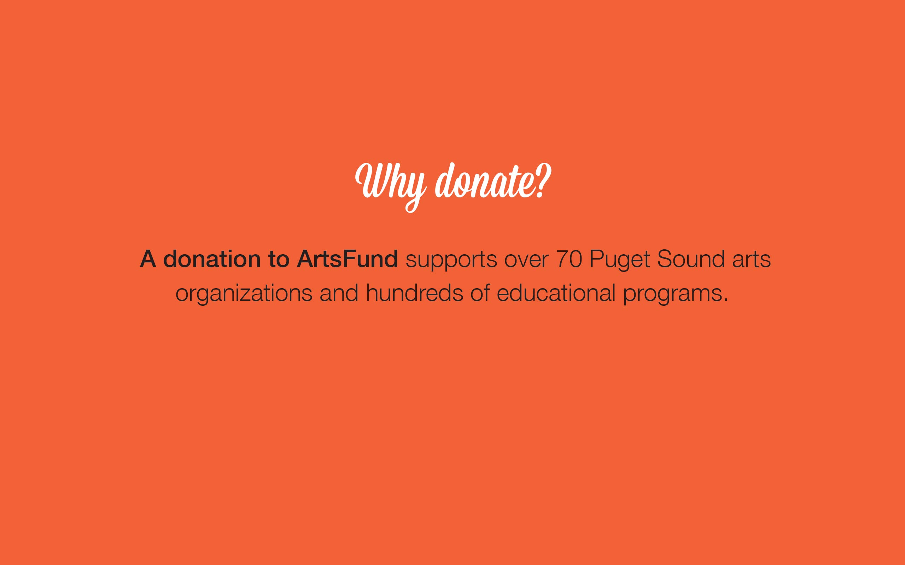
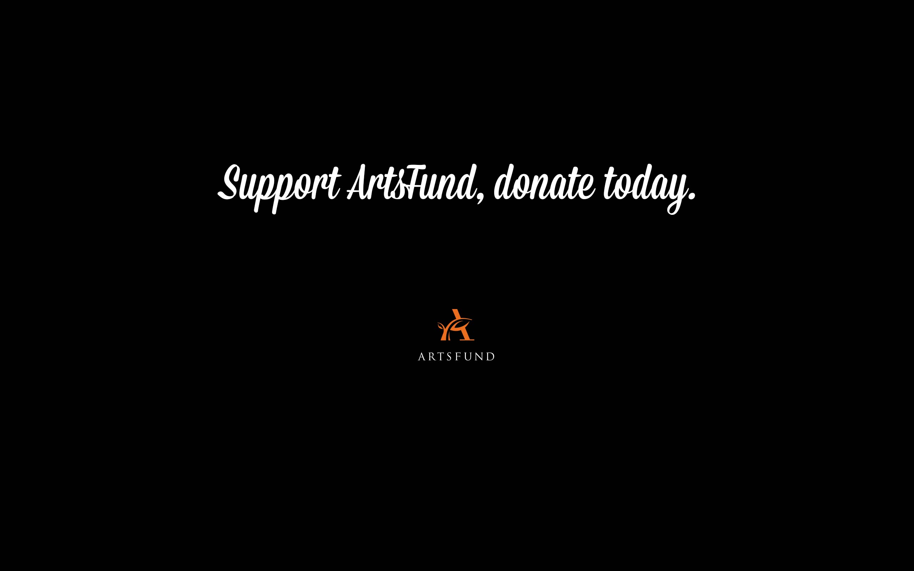
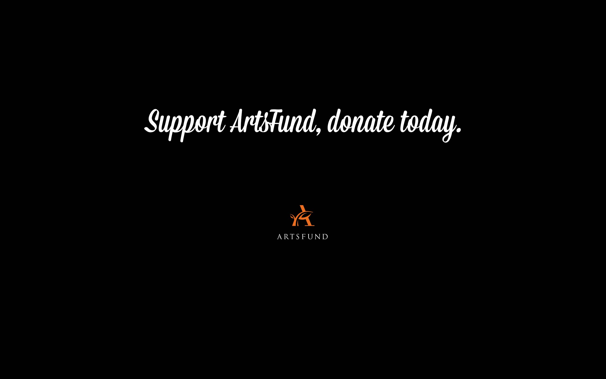

Getty Images + ArtsFund
Branding | Print Design | Marketing | 2014
Getty Images partnered with ArtsFund to launch an internal employee fundraising campaign. I volunteered to lead the design effort, which included creating an engaging theme and graphics to launch and promote events throughout the campaign. The campaign was so successful that it raised twice the funds from the previous year. ArtsFund said it was one of their most successful internal employee fundraising campaigns, and asked to use the visual materials as an example to other companies conducting similar campaigns.
Design Solution
The final designs used imagery from the Getty Images library paired with the event tagline, “Life with Art”. The designed pieces included invitations, custom printed art-quote fortune cookies, and a series of slide presentations.
 





 

Printed Invitations